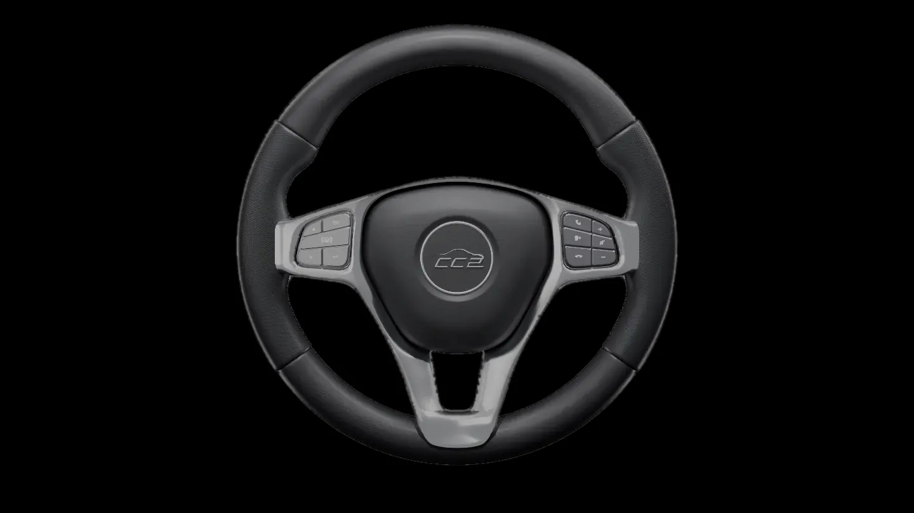
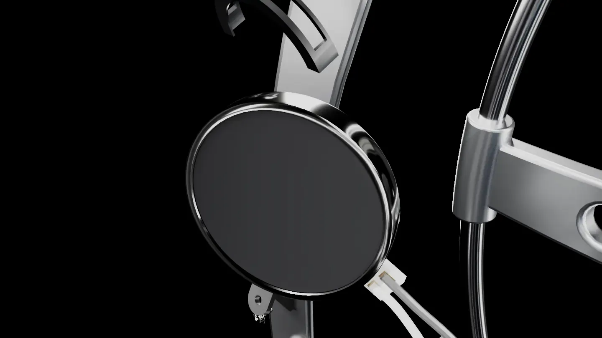

02 The idea
소리가 닿지 않는다면, 다른 감각으로 전하면 됩니다.
위험이 오는 쪽,
그쪽 손이 먼저 울립니다.
다들림 핸들은 사이렌과 경적을 진동으로 바꿉니다. 소리가 난 방향의 그립만 울려서, 운전자는 시선을 도로에 둔 채 방향을 압니다.
두 손이 늘 닿아 있는 곳
운전 중 가장 오래, 가장 확실하게 몸이 닿아 있는 부품입니다.
좌우가 이미 나뉘어 있다
왼손과 오른손 — 방향을 따로 설명할 필요가 없습니다.
시선을 빼앗지 않는다
진동 경고는 반응을 앞당깁니다. 9개 연구 중 8개에서 반응시간이 줄었습니다05.

03 Inside the handle
그렇다면 진동은 어디서 나올까요. 핸들을 열어 보면,
일곱 겹,
그 가운데 모터 여섯 개.
겉보기엔 평범한 핸들이지만 가죽 림 바로 안쪽에 코인 진동 모터가 좌우 세 개씩 들어 있습니다. 손이 닿는 면과 가장 가까운 자리입니다.
04 Direction
모터 여섯 개는 두 묶음으로 나뉩니다. 그게 곧 방향입니다.
울리는 쪽이,
오고 있는 쪽.
왼쪽 그립의 모터 세 개는 아두이노 D5, 오른쪽 세 개는 D6 한 채널로 묶었습니다. 사이렌이 감지된 방향의 채널만 켜지고 반대쪽은 조용합니다.
←
왼쪽 뒤 구급차
→ 왼손 · L1–L3 · D5
→
오른쪽 경적
→ 오른손 · R1–R3 · D6
왼손
오른손
06 Try it
이제 직접 울려 보세요. 방향·소리·거리를 고르면 핸들이 반응합니다.
경적은 거리와 상관없이 ‘주의’로 울립니다.
07 Made by hand
렌더 속 구조를 실제 핸들 위에 그대로 만들었습니다.
Install · Route · Connect
손바닥이 닿는 곡선을 따라 세 지점을 정하고, 그립 안쪽 홈에 코인 모터를 고정합니다.
선은 림 안쪽을 따라 허브까지. 손이 닿는 면에는 아무것도 드러나지 않게.
세 개씩 묶은 모터를 아두이노 PWM 핀 D5·D6에 나눠 연결합니다.

08 Questions
마지막으로, 가장 많이 받은 질문들.
진동만으로 방향을 알 수 있나요?
미리 의미를 알려 주면 좌우 진동 경고에 약 80%가 맞게 반응했습니다07. 다들림은 화면·HUD 표시와 함께 쓰고, 처음 쓰는 사람에게 세 패턴을 먼저 알려 줍니다.
진동이 실제로 도움이 되나요?
전방 충돌 실험에서 진동 경고가 있을 때 브레이크 반응이 1,134 ms에서 886 ms로 빨라졌습니다06.
비슷한 기술이 있나요?
현대자동차그룹이 2019년 사이렌을 HUD 그림과 핸들 진동으로 알려 주는 기술을 공개했습니다14.
청각장애인은 운전이 더 위험한가요?
그런 근거는 없습니다13. 다들림은 운전 능력을 보완하는 게 아니라, 소리로만 오던 정보를 손으로 옮기는 장치입니다.
- Precision Microdrives, 310-103 10 mm vibration motor datasheet (3 V, 12,200 rpm, 1.3 G, lag 40 ms / rise 87 ms) — 다들림 모터의 참고 모델 — precisionmicrodrives.com
- Precision Microdrives AB-012, Driving vibration motors with PWM (평균 전압 = 공급 전압 × duty) — www.precisionmicrodrives.com
- Pacinian corpuscle — 약 250 Hz 진동에 가장 민감, 빠르게 적응하는 수용기 — en.wikipedia.org
- Petermeijer et al. (2015), The effect of haptic support systems on driver performance: A literature survey, IEEE Trans. Haptics 8(4) — pure.tudelft.nl
- Meng et al. (2015), Dynamic vibrotactile signals for forward collision avoidance warning systems, Human Factors 57(2) — research.birmingham.ac.uk
- Bazilinskyy et al. (2017), 좌우 방향 진동 경고 — 사전 안내 시 약 80% 정반응 — repository.tudelft.nl
- 경향신문 (2026.4.19), 2025년 말 등록장애인 262만 7,761명 — 청각장애 17.1% — www.khan.co.kr
- 노컷뉴스 — 2020–2024 소방차 교통사고 1,025건 중 42.5%가 출동 중 — www.nocutnews.co.kr
- Zayen & Groessing, SafeDrive4Deaf: A Mixed-Methods Study — 농·난청 운전자 25명 전원 긴급차량 감지 어려움 — nafath.mada.org.qa
- Dow et al. (2022), Does hearing loss affect the risk of involvement in a motor vehicle crash? J. Transport & Health 26 — profiles.wustl.edu
- Hyundai Motor Group (2019), 청각장애 운전자 지원 기술 — 사이렌을 HUD 그림과 핸들 진동으로 — www.automotiveworld.com
예시 표시 값(duty, 패턴 간격)은 실제 아두이노 값으로 바꿉니다.